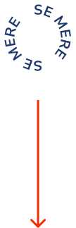

Foran phishing

Hvert år bliver mange unge udsat for phishing og online snyd. Svindlerne bliver dygtigere, og metoderne mere overbevisende. Det er sværere end nogensinde før at gennemskue, hvad der er ægte. Foran hjælper dig med at spotte faresignalerne, så du bedre kan beskytte dig selv og være et skridt foran svindlerne.

Hvad er phishing?
Phishing er en form for digital svindel, hvor svindlere forsøger at lokke personlige oplysninger ud af dig ved at udgive sig for at være nogen, du stoler på. Det kan for eksempel være en bank, en webshop eller en offentlig myndighed. Beskederne ser ofte ægte ud og er lavet til at få dig til at handle hurtigt, før du når at tænke dig om.
Du kan for eksempel få en sms om, at dit sygesikringskort skal fornyes, og at du skal betale 20 kr. via et link for at få det sendt. Det virker realistisk og harmløst, men linket fører ikke til en rigtig løsning. I stedet er det en fælde, hvor svindlere forsøger at stjæle dine kortoplysninger og misbruge dem.
Hvorfor virker det?
Phishing virker, fordi svindlerne er gode til at spille på følelser og skabe troværdighed. Beskederne er ofte lavet, så de ligner noget, du kender i forvejen, som en bank, en myndighed eller en leveringstjeneste. Samtidig prøver de at få dig til at reagere hurtigt ved at skabe stress, frygt eller nysgerrighed.
Hvis du for eksempel får en besked om, at din konto bliver lukket, at en pakke ikke kan leveres, eller at du skal handle med det samme, er der større chance for, at du klikker uden at tænke nærmere over det. Phishing virker altså ikke, fordi folk er naive, men fordi svindlen er designet til at føles ægte og presse dig til at reagere hurtigt.
Typiske faresignaler
Phishing er svær at spotte, men her er de typiske faresignaler, du kan holde øje med. Klik på boksene for at læse mere.
Tjek hvem beskeden egentlig kommer fra. Navnet kan se rigtigt ud, men mailadressen eller nummeret kan være mistænkeligt.
Beskeden kan få det til at lyde akut, for eksempel at en pakke er tilbageholdt eller en konto bliver lukket. Tag en pause og overvej, om beskeden faktisk giver mening.
Vær ekstra opmærksom, hvis du bliver bedt om adgangskoder, kortoplysninger eller MitID.
Det er ikke nok, at én ting virker troværdig. Kig både på afsender, link, og hvad du bliver bedt om i beskeden.
Et link kan ligne noget ægte, men føre til en falsk side. Hold øje med mærkelige webadresser eller små ændringer i navnet.
Vær skeptisk, hvis du pludselig skal betale noget, bekræfte en konto eller gøre noget, du ikke havde regnet med.
Ville du selv opdage det?
Prøv vores interaktive scenarie og oplev, hvordan virkelige svindlere forsøger at lokke dig i fælden. Bliv bedre til at genkende faresignalerne og kom foran svindlerne.
Kan du spotte phishing? Test dig selv her
Din bedste ven har fødselsdag om to dage
Du har bestilt en gave online, og venter nu på at DAO leverer pakken.
Du modtager en SMS i samme beskedtråd som tidligere beskeder fra DAO.
Der står:
“Din pakke er tilbageholdt på grund af manglende vejnummer på pakken. Opdater venligst dine forsendelsesoplysninger:https://dao-ak.com/A/S. Vh DAO.”
Hvad gør du?
Trykker på linket
Under linket står der, at de mangler din adresse og et gebyr på 5 kr for at opdatere oplysningerne.
Hvad gør du?
Du tjekker DAO's hjemmeside
Du kommer ind på DAO’s hjemmeside, og der står ingenting om manglende leveringsoplysninger, kun at pakken stadig er på vej.
Godt valgt! Selvom beskeden ligger i samme SMS-tråd som tidligere ægte beskeder fra DAO, betyder det ikke nødvendigvis, at den nye besked også er sendt af DAO. Svindlere kan sende falske beskeder som kan placere sig i samme tråd som rigtige beskeder gennem SMS-spoofing.
Du indtaster dine betalingsoplysninger og trykker godkend
Du får besked om, at dine oplysninger er opdateret, og at pakken er på vej. Kort tid efter opdager du dog mistænkelige træk på dit kort.
Det viser sig, at beskeden var svindel, selvom den lå i samme tråd som rigtige DAO-beskeder. Derfor er det vigtigt altid at tjekke virksomhedens hjemmeside direkte, før du deler private oplysninger.